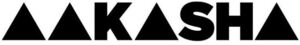

Trade Mark Journal No.2025/048 28 November 2025
WO0000001872957 (18,25)
Office of origin: European Union Intellectual Property Office (EUIPO)
Date of International Registration:10 March 2025
Date of designation in the UK:
10 March 2025

International priority date claimed: 24 January 2025
(European Union Intellectual Property Office (EUIPO))
(019135550)
- Class 18
- Bags; evening handbags; ladies' handbags; pocket wallets; handbags made of leather; leather bags and wallets; purses; portfolio cases [briefcases]; rucksacks; handbags; gentlemen's handbags; bags for sports; attache cases made of leather.
- Class 25
- Bathing suits; underwear; blazers; blouses; boleros; outerclothing; jumper suits; ladies' underwear; women's outerclothing; ladies' clothing; clothing; jackets [clothing]; suits; men's and women's jackets, coats, trousers, vests; hats; formalwear; coats; underpants; skirts; dress shirts; dresses; shrugs; overcoats; casualwear; ladies' boots; pelisses; chemises; women's suits; skirt suits; tailleurs; pantie-girdles; women's foldable slippers; footwear for women; coats for women; tops [clothing]; ladies' dresses; ladies' sandals; women's ceremonial dresses; shawls and stoles; shawls and headscarves; millinery; stoles; halter tops; waistcoats; winter gloves; caps being headwear; leather belts [clothing]; belts made from imitation leather; ready-made clothing; bandeaux [clothing]; nightwear; shoes; shirts and slips; fabric belts [clothing]; maillots; leather headwear; bonnets [headwear]; denim jeans; denims [clothing]; casual footwear; leather shoes; fur hats; headscarves; head sweatbands; fashion hats; fascinator hats; dress shoes; headbands [clothing]; sleepsuits; sweaters; down jackets; shirts; gloves [clothing]; polo shirts; tee-shirts; hosiery; neck scarves [mufflers]; shoulder scarves; foulards [clothing articles]; bandanas [neckerchiefs]; reversible jackets; sportswear; menswear; men's underwear; footwear for men; clothing for men, women and children; children's wear; children's outerclothing; athletic shoes; socks; stockings; men's socks; sports socks; belts [clothing]; girdles; money belts [clothing]; linen clothing; knitted gloves; knot caps; knit jackets; fleece vests; wedding dresses; bridal garters; costumes; rain slickers; short sets [clothing]; jogging sets [clothing].
AAKASHA EOOD
Representative: Angelina Ilieva, 2 Nikolay Haitov Street, , entrance G, floor 5, , office G13, BG-1113 Sofia, BULGARIA